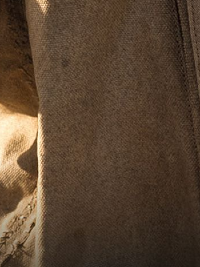
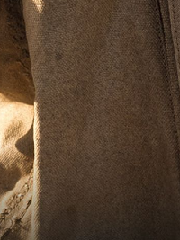

 
Din Grogu, colloquially referred to as Baby Yoda or simply Grogu, is a character from the Star Wars Disney+ original television series The Mandalorian and The Book of Boba Fett. He is an infant member of the same species as the Star Wars characters Yoda and Yaddle, with whom he shares a strong ability in the Force.